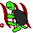
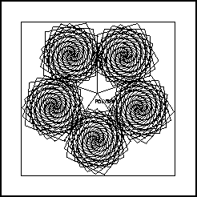
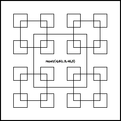
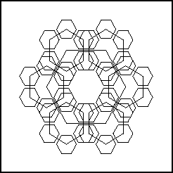

This paper, presented at the SUGI 15 Conference, describes a set of SAS macros which provide the ability to draw interesting geometric designs using the "turtle-relative" drawing commands of the Logo language, rather than absolute X-Y coordinates as is characteristic in SAS. This makes drawing many types of figures much easier.For example, here are some polyspiral and spingon designs drawn with the SAS/GRAPH Logo macros:

[You can try out one of these online on my Recursive Polygon Page]
Another key feature of the Logo language is recursion, which also simplifies many graphic procedures. Since the SAS data step has neither local variables, nor recursion, it is extremely difficult to do some things that are very easy in Logo. (See my book, Advanced Logo: A Language for Learning for more information.) However, the SAS macro language supports both local variables and recursion, which allows recursive macros modelling Logo procedures to be defined. A variety of Logo-like designs created in this way with SAS/GRAPH are illustrated.
For example, a recursive polygon is one which has a smaller polygon drawn at each vertex, down to some depth of recursion.
Here are some repoly designs of depth 3 and 4:


Michael Friendly, Psychology Department